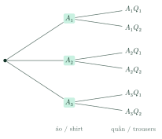

Counting RulesQuy tắc đếm
Grade 10 · Topic: CombinatoricsLớp 10 · Chủ đề: Đại số tổ hợp
1Lesson IntroductionGiới thiệu bài học
Learning goalsMục tiêu bài học
By the end of this lesson you can:
Sau bài học này, em có thể:
recognise the rule of sum and the rule of product;
nhận biết quy tắc cộng và quy tắc nhân;
list outcomes with a tree diagram;
liệt kê kết quả bằng sơ đồ hình cây;
count numbers, codes and routes, splitting into cases and stages;
đếm số, mã, đường đi bằng cách chia trường hợp và chia công đoạn;
use the complement to count "at least one" situations.
dùng phần bù để đếm các tình huống "có ít nhất một".
2Mathematical VocabularyTừ vựng Toán học
rule of sum – if a job can be done in one of two ways with no common outcome, having \(m\) and \(n\) options, there are \(m+n\) ways.
quy tắc cộng – nếu một công việc được hoàn thành bởi một trong hai phương án không trùng nhau, có \(m\) và \(n\) cách, thì có \(m+n\) cách.
rule of product – if a job has two successive stages with \(m\) and \(n\) options, there are \(m\cdot n\) ways.
quy tắc nhân – nếu một công việc gồm hai công đoạn liên tiếp có \(m\) và \(n\) cách, thì có \(m\cdot n\) cách.
tree diagram – a diagram whose branches list all outcomes stage by stage.
sơ đồ hình cây – sơ đồ liệt kê mọi kết quả theo từng công đoạn bằng các nhánh.
3Useful English PhrasesCụm từ tiếng Anh thường gặp
There are two cases, so we add.
Có hai trường hợp nên ta cộng.
There are three stages, so we multiply.
Có ba công đoạn nên ta nhân.
The first digit cannot be zero.
Chữ số đầu tiên phải khác 0.
Count the complement and subtract.
Đếm phần bù rồi lấy tổng trừ đi.
Each branch of the tree is one outcome.
Mỗi nhánh của cây là một kết quả.
4Prerequisite ReviewÔn tập kiến thức nền
From Bài 2: for disjoint finite sets \(n(A\cup B)=n(A)+n(B)\); in general \(n(A\cup B)=n(A)+n(B)-n(A\cap B)\). A natural number with \(k\) digits has a non-zero first digit.
Từ Bài 2: với hai tập hữu hạn rời nhau \(n(A\cup B)=n(A)+n(B)\); tổng quát \(n(A\cup B)=n(A)+n(B)-n(A\cap B)\). Số tự nhiên có \(k\) chữ số có chữ số đầu tiên khác 0.
5TheoryLý thuyết
5.1 The rule of sumQuy tắc cộng
RuleQuy tắc
A job can be done by one of two methods: method 1 has \(m\) ways, method 2 has \(n\) ways, and no way is shared. Then the job can be done in \(m+n\) ways.
Một công việc được hoàn thành bởi một trong hai phương án: phương án 1 có \(m\) cách, phương án 2 có \(n\) cách, không có cách nào trùng nhau. Khi đó có \(m+n\) cách hoàn thành công việc.
It extends to several methods. Key word: or (cases).
Mở rộng cho nhiều phương án. Dấu hiệu: hoặc (các trường hợp).
5.2 The rule of productQuy tắc nhân
RuleQuy tắc
A job consists of two successive stages: stage 1 has \(m\) ways and, for each of them, stage 2 has \(n\) ways. Then the job can be done in \(m\cdot n\) ways.
Một công việc gồm hai công đoạn liên tiếp: công đoạn 1 có \(m\) cách, ứng với mỗi cách đó công đoạn 2 có \(n\) cách. Khi đó có \(m\cdot n\) cách hoàn thành công việc.
It extends to several stages. Key word: and then (stages). A tree diagram shows the stages as branching levels.
Mở rộng cho nhiều công đoạn. Dấu hiệu: rồi, và (các công đoạn). Sơ đồ hình cây thể hiện mỗi công đoạn là một tầng rẽ nhánh.

5.3 Combining the rulesPhối hợp hai quy tắc
StrategyChiến lược
Split into disjoint cases (add), then count each case by stages (multiply).
Chia thành các trường hợp rời nhau (cộng), rồi đếm mỗi trường hợp theo công đoạn (nhân).
Put the most restricted position first (first digit \(\ne0\), last digit even, …).
Ưu tiên vị trí bị ràng buộc nhiều nhất (chữ số đầu khác 0, chữ số cuối chẵn, …).
"At least one": count everything, subtract the complement ("none").
"Có ít nhất một": đếm tất cả rồi trừ phần bù ("không có").
Watch out!Lưu ý
Add only when the cases do not overlap; multiply only when the number of choices at a stage does not depend on earlier choices.
Chỉ cộng khi các trường hợp không giao nhau; chỉ nhân khi số cách ở mỗi công đoạn không phụ thuộc vào lựa chọn trước đó.
6Worked ExamplesVí dụ có lời giải
ExampleVí dụ 1BasicCơ bản – Rule of sumQuy tắc cộng
From Hà Nội to Huế you can fly (3 flights a day), take the train (2 trains) or take a coach (4 coaches). How many ways are there to choose one trip?
Từ Hà Nội vào Huế có thể đi máy bay (3 chuyến/ngày), tàu hỏa (2 chuyến) hoặc xe khách (4 chuyến). Có bao nhiêu cách chọn một chuyến đi?
Analysis: Three non-overlapping options.
Phân tích: Ba phương án không trùng nhau.
\(3+2+4=9\).
\(3+2+4=9\).
9 ways.
9 cách.
ExampleVí dụ 2BasicCơ bản – Rule of productQuy tắc nhân
Minh has 3 shirts \(A_1,A_2,A_3\) and 2 pairs of trousers \(Q_1,Q_2\). How many outfits (one shirt and one pair) can he wear? List them.
Minh có 3 áo \(A_1,A_2,A_3\) và 2 quần \(Q_1,Q_2\). Có bao nhiêu bộ (một áo và một quần)? Liệt kê.
Analysis: Stage 1 shirt, stage 2 trousers.
Phân tích: Công đoạn 1 chọn áo, công đoạn 2 chọn quần.
\(3\cdot2=6\); the tree gives \(A_1Q_1, A_1Q_2, A_2Q_1, A_2Q_2, A_3Q_1, A_3Q_2\).
\(3\cdot2=6\); sơ đồ cây cho \(A_1Q_1, A_1Q_2, A_2Q_1, A_2Q_2, A_3Q_1, A_3Q_2\).
6 outfits.
6 bộ.
ExampleVí dụ 3IntermediateTrung bình – Numbers with conditionsLập số có điều kiện
From the digits \(0,1,2,3,4,5\): a) how many 3-digit numbers with distinct digits? b) how many of them are even?
Từ các chữ số \(0,1,2,3,4,5\): a) lập được bao nhiêu số có 3 chữ số đôi một khác nhau? b) bao nhiêu số trong đó là số chẵn?
Analysis: a) first digit \(\ne0\); b) cases: last digit 0, or last digit 2 or 4.
Phân tích: a) chữ số đầu khác 0; b) chia trường hợp: tận cùng là 0, hoặc tận cùng là 2 hoặc 4.
a) \(5\cdot5\cdot4=100\) (hundreds 5 ways, tens 5, units 4).
a) \(5\cdot5\cdot4=100\) (hàng trăm 5 cách, hàng chục 5, hàng đơn vị 4).
b) Last digit 0: \(5\cdot4=20\). Last digit 2 or 4: 2 ways, then the first digit 4 ways (not 0, not the last), the middle 4 ways: \(2\cdot4\cdot4=32\).
b) Tận cùng 0: \(5\cdot4=20\). Tận cùng 2 hoặc 4: 2 cách, chữ số đầu 4 cách (khác 0 và khác chữ số cuối), chữ số giữa 4 cách: \(2\cdot4\cdot4=32\).
\(20+32=52\).
\(20+32=52\).
a) 100; b) 52.
a) 100; b) 52.
ExampleVí dụ 4IntermediateTrung bình – Counting divisorsĐếm ước số
How many positive divisors does 360 have?
Số 360 có bao nhiêu ước nguyên dương?
Analysis: \(360=2^3\cdot3^2\cdot5\); a divisor is \(2^i3^j5^k\).
Phân tích: \(360=2^3\cdot3^2\cdot5\); mỗi ước có dạng \(2^i3^j5^k\).
\(i\in\{0,1,2,3\}\) (4 ways), \(j\) 3 ways, \(k\) 2 ways.
\(i\in\{0,1,2,3\}\) (4 cách), \(j\) có 3 cách, \(k\) có 2 cách.
\(4\cdot3\cdot2=24\).
\(4\cdot3\cdot2=24\).
24 divisors.
24 ước.
ExampleVí dụ 5AdvancedNâng cao – A password policyQuy định mật khẩu
A password has 6 characters, each a digit (10) or a lowercase letter (26), and must contain at least one digit. How many passwords are possible?
Mật khẩu gồm 6 kí tự, mỗi kí tự là một chữ số (10) hoặc một chữ cái thường (26), và phải có ít nhất một chữ số. Có bao nhiêu mật khẩu?
Analysis: Complement: passwords with no digit.
Phân tích: Phần bù: mật khẩu không có chữ số nào.
All: \(36^6=2\,176\,782\,336\).
Tất cả: \(36^6=2\,176\,782\,336\).
No digit: \(26^6=308\,915\,776\).
Không có chữ số: \(26^6=308\,915\,776\).
\(36^6-26^6=1\,867\,866\,560\).
\(36^6-26^6=1\,867\,866\,560\).
1 867 866 560 passwords (about 86% of all strings).
1 867 866 560 mật khẩu (khoảng 86% số chuỗi).
7PracticeBài tập luyện tập
A. Multiple ChoiceA. Trắc nghiệm nhiều lựa chọn
A library shelf has 7 maths books, 5 physics books and 4 chemistry books (all different). In how many ways can you borrow one book?
Một giá sách có 7 cuốn Toán, 5 cuốn Vật lí, 4 cuốn Hóa học (đôi một khác nhau). Có bao nhiêu cách mượn một cuốn?
Answer: b. Rule of sum.
Đáp án b. Quy tắc cộng: \(7+5+4\).
A set menu has one starter (3 kinds), one main dish (5 kinds) and one drink (4 kinds). How many menus?
Một suất ăn gồm một món khai vị (3 loại), một món chính (5 loại) và một đồ uống (4 loại). Có bao nhiêu suất ăn khác nhau?
Answer: a. Rule of product.
Đáp án a. Quy tắc nhân: \(3\cdot5\cdot4\).
A→B: 3 roads; B→C: 4 roads; A→C directly: 2 roads. Ways from A to C?
Từ A đến B có 3 đường, từ B đến C có 4 đường, từ A đến thẳng C có 2 đường. Số cách đi từ A đến C là…
Answer: d. Via B: \(3\cdot4\); direct: 2.
Đáp án d. Qua B: \(3\cdot4\); đi thẳng: 2; cộng lại.
B. True or FalseB. Đúng hoặc sai
From the digits \(1,\,2,\,3,\,4\) one can form exactly 64 numbers with 3 digits (repetition allowed).
Từ các chữ số \(1,\,2,\,3,\,4\) lập được đúng 64 số có 3 chữ số (các chữ số có thể lặp lại).
There are 64 such numbers.
Có \(4\cdot4^{2}=64\) số.
72 has exactly 12 positive divisors.
Số 72 có đúng 12 ước nguyên dương.
It has 12.
Phân tích thừa số nguyên tố rồi nhân các (số mũ + 1): có 12 ước.
C. Short AnswerC. Trả lời ngắn
How many 3-digit numbers with distinct digits can be formed from \(0,\,1,\,2,\,3,\,4\)?
Từ các chữ số \(0,\,1,\,2,\,3,\,4\) lập được bao nhiêu số có 3 chữ số đôi một khác nhau?
Enter a number.
Nhập một số.
First digit not 0, no repetition.
Chữ số đầu khác 0, các chữ số không lặp: 48 số.
A door code has 3 digits, all different. How many codes are possible?
Mã khóa cửa gồm 3 chữ số đôi một khác nhau. Có bao nhiêu mã?
Enter a number.
Nhập một số.
\(10\cdot9\cdots\).
Quy tắc nhân: \(10\cdot9\cdot8=720\).
A. Multiple ChoiceA. Trắc nghiệm nhiều lựa chọn
A library shelf has 12 maths books, 9 physics books and 6 chemistry books (all different). In how many ways can you borrow one book?
Một giá sách có 12 cuốn Toán, 9 cuốn Vật lí, 6 cuốn Hóa học (đôi một khác nhau). Có bao nhiêu cách mượn một cuốn?
Answer: b. Rule of sum.
Đáp án b. Quy tắc cộng: \(12+9+6\).
A set menu has one starter (4 kinds), one main dish (6 kinds) and one drink (3 kinds). How many menus?
Một suất ăn gồm một món khai vị (4 loại), một món chính (6 loại) và một đồ uống (3 loại). Có bao nhiêu suất ăn khác nhau?
Answer: a. Rule of product.
Đáp án a. Quy tắc nhân: \(4\cdot6\cdot3\).
A→B: 5 roads; B→C: 3 roads; A→C directly: 2 roads. Ways from A to C?
Từ A đến B có 5 đường, từ B đến C có 3 đường, từ A đến thẳng C có 2 đường. Số cách đi từ A đến C là…
Answer: d. Via B: \(5\cdot3\); direct: 2.
Đáp án d. Qua B: \(5\cdot3\); đi thẳng: 2; cộng lại.
B. True or FalseB. Đúng hoặc sai
From the digits \(0,\,1,\,2,\,3,\,5\) one can form exactly 125 numbers with 3 digits (repetition allowed).
Từ các chữ số \(0,\,1,\,2,\,3,\,5\) lập được đúng 125 số có 3 chữ số (các chữ số có thể lặp lại).
There are 100 such numbers.
Có \(4\cdot5^{2}=100\) số.
100 has exactly 9 positive divisors.
Số 100 có đúng 9 ước nguyên dương.
It has 9.
Phân tích thừa số nguyên tố rồi nhân các (số mũ + 1): có 9 ước.
C. Short AnswerC. Trả lời ngắn
How many 3-digit numbers with distinct digits can be formed from \(1,\,3,\,5,\,7,\,9\)?
Từ các chữ số \(1,\,3,\,5,\,7,\,9\) lập được bao nhiêu số có 3 chữ số đôi một khác nhau?
Enter a number.
Nhập một số.
First digit not 0, no repetition.
Chữ số đầu khác 0, các chữ số không lặp: 60 số.
A door code has 4 digits, all different. How many codes are possible?
Mã khóa cửa gồm 4 chữ số đôi một khác nhau. Có bao nhiêu mã?
Enter a number.
Nhập một số.
\(10\cdot9\cdots\).
Quy tắc nhân: \(10\cdot9\cdot8\cdot7=5040\).
A. Multiple ChoiceA. Trắc nghiệm nhiều lựa chọn
A library shelf has 15 maths books, 8 physics books and 11 chemistry books (all different). In how many ways can you borrow one book?
Một giá sách có 15 cuốn Toán, 8 cuốn Vật lí, 11 cuốn Hóa học (đôi một khác nhau). Có bao nhiêu cách mượn một cuốn?
Answer: b. Rule of sum.
Đáp án b. Quy tắc cộng: \(15+8+11\).
A set menu has one starter (2 kinds), one main dish (7 kinds) and one drink (5 kinds). How many menus?
Một suất ăn gồm một món khai vị (2 loại), một món chính (7 loại) và một đồ uống (5 loại). Có bao nhiêu suất ăn khác nhau?
Answer: a. Rule of product.
Đáp án a. Quy tắc nhân: \(2\cdot7\cdot5\).
A→B: 4 roads; B→C: 3 roads; A→C directly: 2 roads. Ways from A to C?
Từ A đến B có 4 đường, từ B đến C có 3 đường, từ A đến thẳng C có 2 đường. Số cách đi từ A đến C là…
Answer: d. Via B: \(4\cdot3\); direct: 2.
Đáp án d. Qua B: \(4\cdot3\); đi thẳng: 2; cộng lại.
B. True or FalseB. Đúng hoặc sai
From the digits \(0,\,2,\,4,\,6\) one can form exactly 192 numbers with 4 digits (repetition allowed).
Từ các chữ số \(0,\,2,\,4,\,6\) lập được đúng 192 số có 4 chữ số (các chữ số có thể lặp lại).
There are 192 such numbers.
Có \(3\cdot4^{3}=192\) số.
90 has exactly 10 positive divisors.
Số 90 có đúng 10 ước nguyên dương.
It has 12.
Phân tích thừa số nguyên tố rồi nhân các (số mũ + 1): có 12 ước.
C. Short AnswerC. Trả lời ngắn
How many 3-digit numbers with distinct digits can be formed from \(0,\,2,\,4,\,6,\,8,\,9\)?
Từ các chữ số \(0,\,2,\,4,\,6,\,8,\,9\) lập được bao nhiêu số có 3 chữ số đôi một khác nhau?
Enter a number.
Nhập một số.
First digit not 0, no repetition.
Chữ số đầu khác 0, các chữ số không lặp: 100 số.
A door code has 5 digits, all different. How many codes are possible?
Mã khóa cửa gồm 5 chữ số đôi một khác nhau. Có bao nhiêu mã?
Enter a number.
Nhập một số.
\(10\cdot9\cdots\).
Quy tắc nhân: \(10\cdot9\cdot8\cdot7\cdot6=30240\).
D. Self-practice: Multiple ChoiceD. Tự luyện: trắc nghiệm
A canteen offers 12 kinds of rice dishes, 6 kinds of noodle dishes and 7 kinds of bread. A student chooses one dish. How many choices are there?
Căng tin có 12 món cơm, 6 món bún/phở và 7 loại bánh mì. Một học sinh chọn một món. Có bao nhiêu cách chọn?
Answer: c. Rule of sum (the cases do not overlap).
Đáp án c. Quy tắc cộng (ba phương án không trùng nhau): \(12+6+7=25\).
Lan has 6 shirts, 3 skirts and 4 pairs of shoes. An outfit is one of each. How many outfits are there?
Lan có 6 áo, 3 chân váy và 4 đôi giày. Một bộ trang phục gồm một áo, một váy, một đôi giày. Có bao nhiêu bộ?
Answer: b. Rule of product (three successive choices).
Đáp án b. Quy tắc nhân (chọn lần lượt ba thứ): \(6\cdot3\cdot4=72\).
From A to B there are 4 roads, from B to C 5 roads, and 1 direct roads from A to C. How many ways are there to go from A to C?
Từ A đến B có 4 con đường, từ B đến C có 5 con đường, ngoài ra có 1 con đường đi thẳng từ A đến C. Có bao nhiêu cách đi từ A đến C?
Answer: c. Via B: \(4\cdot5\); direct: \(1\); add.
Đáp án c. Qua B: \(4\cdot5=20\) cách (quy tắc nhân); đi thẳng: 1 cách; cộng lại: 21.
How many 4-digit numbers can be formed from the digits \(0,\,2,\,6,\,9\) (digits may repeat)?
Có bao nhiêu số tự nhiên có 4 chữ số được lập từ các chữ số \(0,\,2,\,6,\,9\) (các chữ số có thể lặp lại)?
Answer: c. First digit: 3 choices (not 0); each other digit: 4.
Đáp án c. Chữ số đầu: 3 cách (khác 0); mỗi chữ số còn lại: 4 cách; quy tắc nhân.
How many 4-digit numbers with \lt b\gt distinct\lt /b\gt digits can be formed from \(0,\,1,\,2,\,3,\,7,\,8,\,9\)?
Có bao nhiêu số tự nhiên có 4 chữ số \lt b\gt đôi một khác nhau\lt /b\gt lập từ các chữ số \(0,\,1,\,2,\,3,\,7,\,8,\,9\)?
Answer: b. First digit not 0, then the others without repetition.
Đáp án b. Chọn chữ số đầu (khác 0), rồi các chữ số còn lại không lặp; kết quả 720.
How many \lt b\gt even\lt /b\gt 3-digit numbers with distinct digits can be formed from \(0,\,1,\,2,\,4,\,7,\,8,\,9\)?
Có bao nhiêu số tự nhiên \lt b\gt chẵn\lt /b\gt có 3 chữ số đôi một khác nhau lập từ các chữ số \(0,\,1,\,2,\,4,\,7,\,8,\,9\)?
Answer: c. Choose the last digit first (even); if 0 is used, split into cases.
Đáp án c. Chọn chữ số hàng đơn vị trước (chẵn); nếu có chữ số 0 thì chia trường hợp tận cùng là 0 hoặc khác 0. Kết quả 105.
How many positive divisors does \(40\) have?
Số \(40\) có bao nhiêu ước nguyên dương?
Answer: c. \(40=2^{3}\cdot5^{1}\): a divisor is \(2^i3^j5^k\).
Đáp án c. \(40=2^{3}\cdot5^{1}\); mỗi ước có dạng \(2^i3^j5^k\): số ước \(=(3+1)(0+1)(1+1)=8\).
A licence plate has 2 letter(s) (from 26 letters) followed by 3 digits (0–9). How many plates are possible?
Một biển số gồm 2 chữ cái (chọn trong 26 chữ cái) và tiếp theo là 3 chữ số (từ 0 đến 9). Có thể tạo được bao nhiêu biển số?
Answer: d. Rule of product: \(26^{2}\cdot10^{3}\).
Đáp án d. Quy tắc nhân: \(26^{2}\cdot10^{3}=676000\).
D. Self-practice: Multiple ChoiceD. Tự luyện: trắc nghiệm
A canteen offers 9 kinds of rice dishes, 10 kinds of noodle dishes and 8 kinds of bread. A student chooses one dish. How many choices are there?
Căng tin có 9 món cơm, 10 món bún/phở và 8 loại bánh mì. Một học sinh chọn một món. Có bao nhiêu cách chọn?
Answer: c. Rule of sum (the cases do not overlap).
Đáp án c. Quy tắc cộng (ba phương án không trùng nhau): \(9+10+8=27\).
Lan has 2 shirts, 5 skirts and 5 pairs of shoes. An outfit is one of each. How many outfits are there?
Lan có 2 áo, 5 chân váy và 5 đôi giày. Một bộ trang phục gồm một áo, một váy, một đôi giày. Có bao nhiêu bộ?
Answer: c. Rule of product (three successive choices).
Đáp án c. Quy tắc nhân (chọn lần lượt ba thứ): \(2\cdot5\cdot5=50\).
From A to B there are 3 roads, from B to C 3 roads, and 4 direct roads from A to C. How many ways are there to go from A to C?
Từ A đến B có 3 con đường, từ B đến C có 3 con đường, ngoài ra có 4 con đường đi thẳng từ A đến C. Có bao nhiêu cách đi từ A đến C?
Answer: a. Via B: \(3\cdot3\); direct: \(4\); add.
Đáp án a. Qua B: \(3\cdot3=9\) cách (quy tắc nhân); đi thẳng: 4 cách; cộng lại: 13.
How many 4-digit numbers can be formed from the digits \(0,\,1,\,2,\,3,\,4,\,5,\,8\) (digits may repeat)?
Có bao nhiêu số tự nhiên có 4 chữ số được lập từ các chữ số \(0,\,1,\,2,\,3,\,4,\,5,\,8\) (các chữ số có thể lặp lại)?
Answer: b. First digit: 6 choices (not 0); each other digit: 7.
Đáp án b. Chữ số đầu: 6 cách (khác 0); mỗi chữ số còn lại: 7 cách; quy tắc nhân.
How many 3-digit numbers with \lt b\gt distinct\lt /b\gt digits can be formed from \(1,\,2,\,3,\,4,\,8\)?
Có bao nhiêu số tự nhiên có 3 chữ số \lt b\gt đôi một khác nhau\lt /b\gt lập từ các chữ số \(1,\,2,\,3,\,4,\,8\)?
Answer: c. First digit, then the others without repetition.
Đáp án c. Chọn chữ số đầu, rồi các chữ số còn lại không lặp; kết quả 60.
How many \lt b\gt even\lt /b\gt 3-digit numbers with distinct digits can be formed from \(0,\,2,\,3,\,4,\,8,\,9\)?
Có bao nhiêu số tự nhiên \lt b\gt chẵn\lt /b\gt có 3 chữ số đôi một khác nhau lập từ các chữ số \(0,\,2,\,3,\,4,\,8,\,9\)?
Answer: c. Choose the last digit first (even); if 0 is used, split into cases.
Đáp án c. Chọn chữ số hàng đơn vị trước (chẵn); nếu có chữ số 0 thì chia trường hợp tận cùng là 0 hoặc khác 0. Kết quả 68.
How many positive divisors does \(360\) have?
Số \(360\) có bao nhiêu ước nguyên dương?
Answer: b. \(360=2^{3}\cdot3^{2}\cdot5^{1}\): a divisor is \(2^i3^j5^k\).
Đáp án b. \(360=2^{3}\cdot3^{2}\cdot5^{1}\); mỗi ước có dạng \(2^i3^j5^k\): số ước \(=(3+1)(2+1)(1+1)=24\).
A licence plate has 2 letter(s) (from 26 letters) followed by 4 digits (0–9). How many plates are possible?
Một biển số gồm 2 chữ cái (chọn trong 26 chữ cái) và tiếp theo là 4 chữ số (từ 0 đến 9). Có thể tạo được bao nhiêu biển số?
Answer: b. Rule of product: \(26^{2}\cdot10^{4}\).
Đáp án b. Quy tắc nhân: \(26^{2}\cdot10^{4}=6760000\).
D. Self-practice: Multiple ChoiceD. Tự luyện: trắc nghiệm
A canteen offers 3 kinds of rice dishes, 6 kinds of noodle dishes and 5 kinds of bread. A student chooses one dish. How many choices are there?
Căng tin có 3 món cơm, 6 món bún/phở và 5 loại bánh mì. Một học sinh chọn một món. Có bao nhiêu cách chọn?
Answer: d. Rule of sum (the cases do not overlap).
Đáp án d. Quy tắc cộng (ba phương án không trùng nhau): \(3+6+5=14\).
Lan has 6 shirts, 6 skirts and 5 pairs of shoes. An outfit is one of each. How many outfits are there?
Lan có 6 áo, 6 chân váy và 5 đôi giày. Một bộ trang phục gồm một áo, một váy, một đôi giày. Có bao nhiêu bộ?
Answer: a. Rule of product (three successive choices).
Đáp án a. Quy tắc nhân (chọn lần lượt ba thứ): \(6\cdot6\cdot5=180\).
From A to B there are 6 roads, from B to C 2 roads, and 3 direct roads from A to C. How many ways are there to go from A to C?
Từ A đến B có 6 con đường, từ B đến C có 2 con đường, ngoài ra có 3 con đường đi thẳng từ A đến C. Có bao nhiêu cách đi từ A đến C?
Answer: d. Via B: \(6\cdot2\); direct: \(3\); add.
Đáp án d. Qua B: \(6\cdot2=12\) cách (quy tắc nhân); đi thẳng: 3 cách; cộng lại: 15.
How many 3-digit numbers can be formed from the digits \(0,\,1,\,3,\,4,\,5,\,7,\,9\) (digits may repeat)?
Có bao nhiêu số tự nhiên có 3 chữ số được lập từ các chữ số \(0,\,1,\,3,\,4,\,5,\,7,\,9\) (các chữ số có thể lặp lại)?
Answer: c. First digit: 6 choices (not 0); each other digit: 7.
Đáp án c. Chữ số đầu: 6 cách (khác 0); mỗi chữ số còn lại: 7 cách; quy tắc nhân.
How many 4-digit numbers with \lt b\gt distinct\lt /b\gt digits can be formed from \(0,\,2,\,5,\,6,\,8\)?
Có bao nhiêu số tự nhiên có 4 chữ số \lt b\gt đôi một khác nhau\lt /b\gt lập từ các chữ số \(0,\,2,\,5,\,6,\,8\)?
Answer: b. First digit not 0, then the others without repetition.
Đáp án b. Chọn chữ số đầu (khác 0), rồi các chữ số còn lại không lặp; kết quả 96.
How many \lt b\gt even\lt /b\gt 3-digit numbers with distinct digits can be formed from \(1,\,3,\,5,\,6,\,7,\,8\)?
Có bao nhiêu số tự nhiên \lt b\gt chẵn\lt /b\gt có 3 chữ số đôi một khác nhau lập từ các chữ số \(1,\,3,\,5,\,6,\,7,\,8\)?
Answer: c. Choose the last digit first (even); if 0 is used, split into cases.
Đáp án c. Chọn chữ số hàng đơn vị trước (chẵn); nếu có chữ số 0 thì chia trường hợp tận cùng là 0 hoặc khác 0. Kết quả 40.
How many positive divisors does \(100\) have?
Số \(100\) có bao nhiêu ước nguyên dương?
Answer: b. \(100=2^{2}\cdot5^{2}\): a divisor is \(2^i3^j5^k\).
Đáp án b. \(100=2^{2}\cdot5^{2}\); mỗi ước có dạng \(2^i3^j5^k\): số ước \(=(2+1)(0+1)(2+1)=9\).
A licence plate has 1 letter(s) (from 26 letters) followed by 4 digits (0–9). How many plates are possible?
Một biển số gồm 1 chữ cái (chọn trong 26 chữ cái) và tiếp theo là 4 chữ số (từ 0 đến 9). Có thể tạo được bao nhiêu biển số?
Answer: c. Rule of product: \(26^{1}\cdot10^{4}\).
Đáp án c. Quy tắc nhân: \(26^{1}\cdot10^{4}=260000\).
8Common MistakesLỗi thường gặp
Adding instead of multiplying. Shirt and then trousers are stages: multiply.
Cộng thay vì nhân. Chọn áo rồi chọn quần là các công đoạn: phải nhân.
Forgetting that the first digit is not 0. With 0 among the digits, treat the first position first.
Quên chữ số đầu khác 0. Khi có chữ số 0, phải xét vị trí đầu tiên trước.
Adding overlapping cases. "Even or divisible by 5" counts numbers ending in 0 twice.
Cộng các trường hợp giao nhau. "Chẵn hoặc chia hết cho 5" đếm hai lần các số tận cùng bằng 0.
Counting "at least one" directly with many cases. Use the complement: total minus "none".
Đếm "ít nhất một" trực tiếp qua nhiều trường hợp. Dùng phần bù: tất cả trừ "không có".
9Lesson SummaryTổng kết
Rule of sum: disjoint cases \(\Rightarrow m+n\).
Quy tắc cộng: các trường hợp rời nhau \(\Rightarrow m+n\).
Rule of product: successive stages \(\Rightarrow m\cdot n\); tree diagrams list outcomes.
Quy tắc nhân: các công đoạn liên tiếp \(\Rightarrow m\cdot n\); sơ đồ cây liệt kê kết quả.
Strategy: cases (add) of stages (multiply); restricted positions first; complement for "at least".
Chiến lược: chia trường hợp (cộng), mỗi trường hợp chia công đoạn (nhân); ưu tiên vị trí có ràng buộc; dùng phần bù cho "ít nhất".
Key words: rule of sum, rule of product, tree diagram, case, stage.
Từ cần nhớ: rule of sum, rule of product, tree diagram, case, stage.